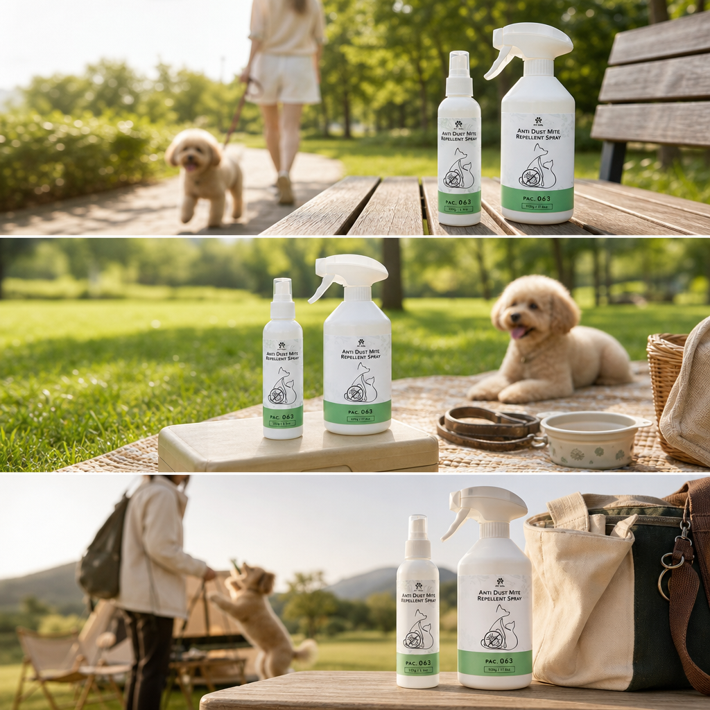
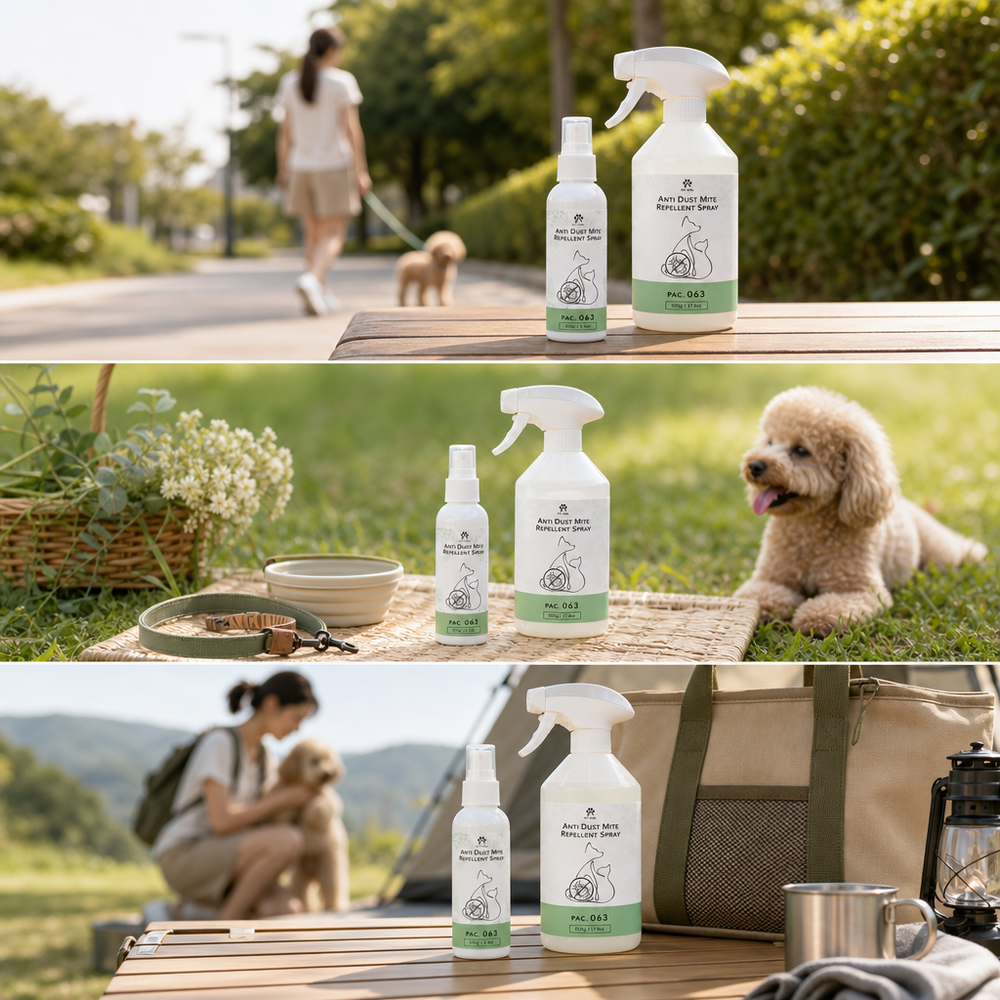

毛天使戶外防蟲噴霧｜第二版多情境候選稿
交付時間：2026-06-04。這批先集中呈現目前已生成的第二版多情境視覺，用於審稿、挑圖與後續 landing page / 社群圖卡重排。
戶外散步
草地休息
旅行出門準備
Facebook / Landing Page 候選素材

候選 A
多段式 campaign 構圖，產品與戶外、草地、出門情境連在一起。
A
候選 B
保留生活感與自然光，適合延伸成首頁主視覺與社群導購圖。
B

候選 C
戶外旅行感較強，可作為露營、出遊、散步主題素材方向。
C